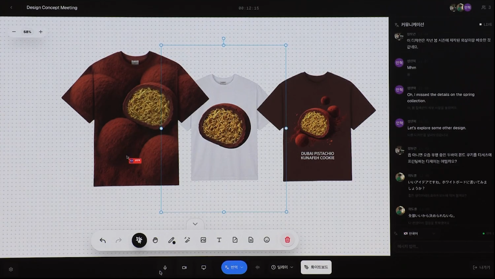
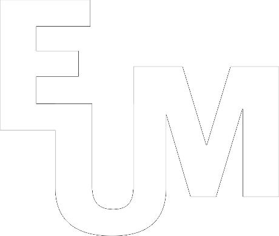
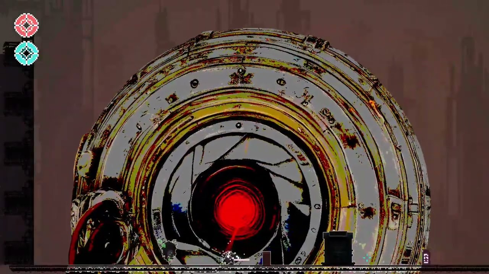
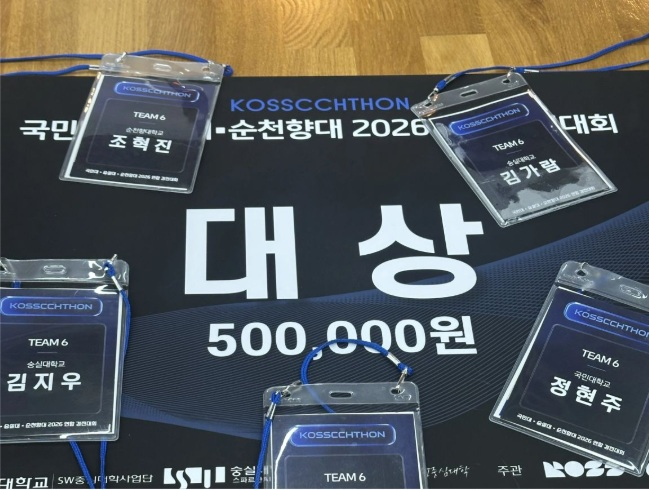

EUM
화상회의와 드로잉을 함께 쓸 때의 렌더링 병목을 개선했습니다.
23.7 → 58.7 FPS
화이트보드 풀스택 개발 · 5인 팀


화상회의와 드로잉을 함께 쓸 때의 렌더링 병목을 개선했습니다.
23.7 → 58.7 FPS
화이트보드 풀스택 개발 · 5인 팀
검색 조건을 바꿔도 현재 결과를 유지하고, 통계와 목록의 업무 분류 기준을 맞췄습니다.
AX Engineer 인턴 · 2026.09 — 현재


직접 만든 게임을 배포하고, PC 앞에 없어도 Discord에서 구현·검증을 요청하는 흐름을 만들었습니다.
개발·기획·아트 · 원격 개발 루프 구축
AI Native Software Engineer
업무와 제작 과정의 불편에서 문제를 찾습니다. 정글에서 다진 CS 기본기와 AI를 바탕으로 필요한 기술을 익히고, 처음 발견한 문제가 해결됐는지 확인합니다.
MOAI · AX Engineer 인턴2026.09 — 현재
누가 어떤 불편을 겪는지 먼저 살핍니다.
AI와 필요한 기술을 익혀 구현합니다.
실제 동작과 통과 조건을 대조합니다.
EUM에서는 렌더링 병목과 드로잉 품질을 개선했고, Unity 게임에서는 전투·입력·튜토리얼을 구현했습니다. 제작 중 반복되는 자산 가공은 SpriteAIMaker로 연결했습니다.
23.7 → 58.7 FPSEUM · 프로젝트 당시 평균 프레임
MOAI의 사용량 원장·관리자 기능, 겜마루의 보고서·알림, Abstraction Bot의 대화 결산을 개발했습니다. 결과 생성 이후의 보관·권한·운영 비용까지 살핍니다.
조회·집계의 일관성MOAI · 관리자 조회·집계 개선
두드리에서는 명세·개발·검증을 연결했고, ROLAI에서는 Discord 요청을 AI·Unity 실행과 로그·영상 확인으로 이어갔습니다. 실패 원인을 구분할 수 있도록 테스트 조건을 고정합니다.
요청 → 구현 → 검증ROLAI · 원격 개발 흐름
인턴 · AX Engineer
AI 사용량 원장 운영에 참여하고, 관리자 API·필터·집계 기준을 개선했습니다. 웹 채팅·Google Chat에서 업무 도구로 이어지는 리드봇 개발에 참여하고 있습니다.
현재 조건을 유지하는 조회 · 실제 업무 상태와 맞는 통계
SmartAI Lab · 학부연구생
평성시 사회 시뮬레이션 연구에 참여했습니다. 초기 라이브러리의 에이전트·공간·월드 구조와 기억·성찰·계획 루프를 구현했습니다.
에이전트 기반 모델링 · LLM · 인터뷰·이벤트 기록

대상 · 1위
국민대·숭실대·순천향대 연합 경진대회에서 두드리 프로젝트로 대상(1위)을 수상했습니다. 짧은 일정에서 AI와 명세 작성·구현·검증을 연결했습니다.
수상 이후 생성 데이터 일관성과 편집 기능 개선
AI소프트웨어학부
AI소프트웨어학부에 재학 중입니다. 게임 제작 동아리 겜마루의 소개·게임 아카이브 웹과 보고서 공간을 개발했습니다.
겜마루 웹 · 데일리 브리프
SW-AI Lab · 11기
CS 기본기를 다지고 PintOS의 스레드 스케줄링·사용자 프로그램·가상 메모리를 구현했습니다. EUM에서는 화이트보드 풀스택 개발을 담당했습니다.
PintOS · EUM
컴퓨터게임개발과
컴퓨터게임개발과에서 게임 제작을 공부했습니다. 학생부회장·학생회장을 맡았고, 개발 동아리 Dash를 창립해 회장으로 활동했습니다.
이후에도 Unity 게임 제작과 팀 협업을 이어가고 있습니다.